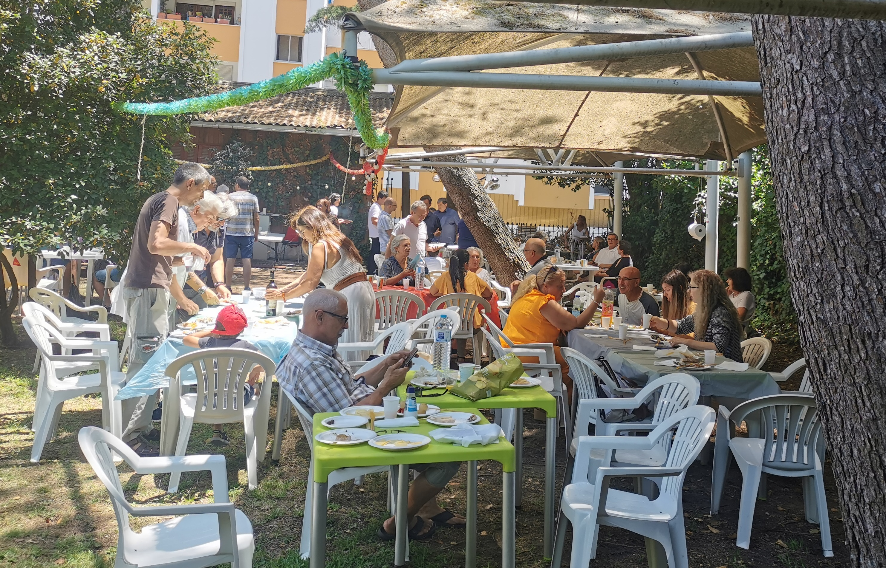
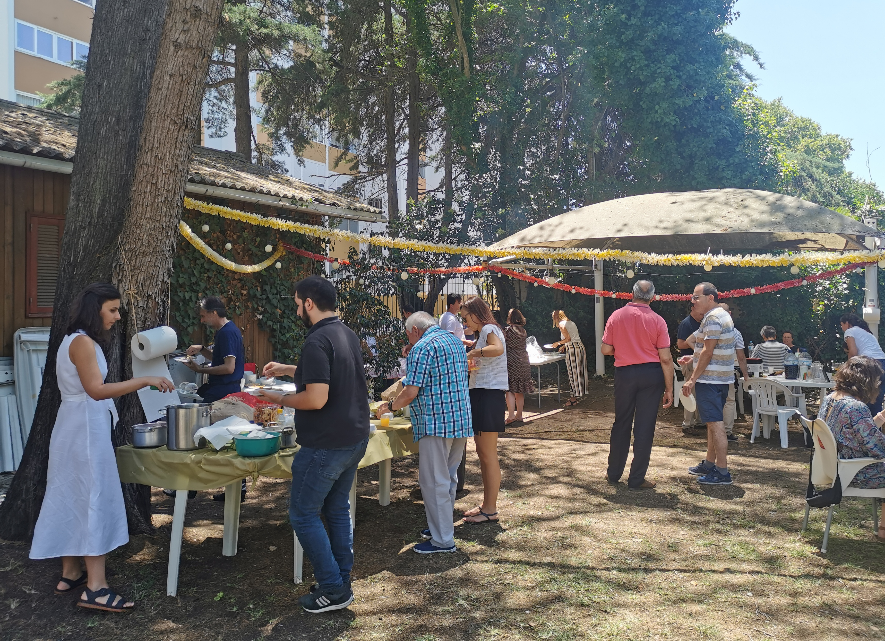
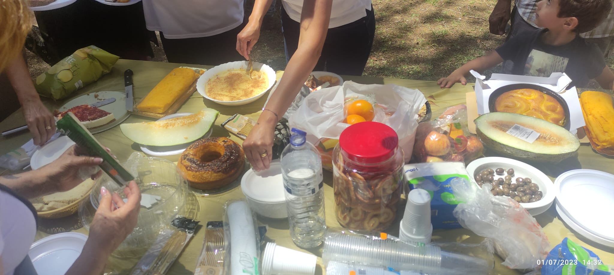
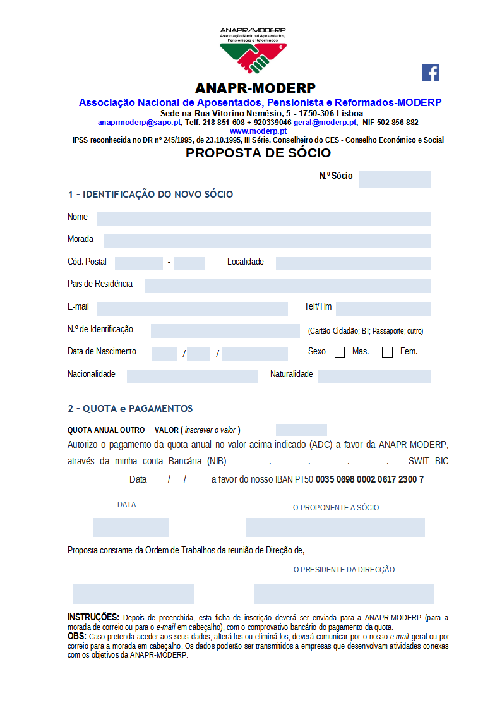

-




-
Quem somos
A ANAPR-MODERP – Associação Nacional de Aposentados, Pensionistas e Reformados, IPSS foi constituída por escritura pública em 19 de fevereiro de 1992, e reconhecida como IPSS e pessoa coletiva de utilidade pública pela publicação no DR nº 113, III série, de 16 de maio de 1995. A ANAPR/MODERP, enquanto IPSS, deriva do MODERP - Movimento Democrático de Reformados e Pensionistas, criado a 26 de outubro de 1986. A ANAPR-MODERP, como IPSS outorgada pelo DL 245/1995, III Série, é ainda conselheira eleita e efetiva no CES-Conselho Económico e Social, integra o órgão do CNPSSS – Conselho Nacional das Políticas Sociais da Segurança Social, é eleita efetiva no CCIGFSS - Conselho Consultivo do IGF da Segurança Social, é parceira na Comissão Social da Freguesia de Santa Clara assim como na Rede Social de Lisboa para além de integrar os Órgãos Sociais da UDIPSS de Lisboa. A integração da ANAPR-MODERP nestas organizações transporta em nós a legitimidade e a responsabilidade na defesa dos cidadãos mais idosos junto de Organismos do Estado ou Privados sendo, sempre, um garante de uma Voz na sua defesa e reivindicação A ANAPR-MODERP, tem como missão a de responder às necessidades do setor, com soluções que permitam a criação de valor, estabelecendo relações de confiança e intergeracionalidade apontando a uma Longevidade Ativa, ou seja, ao prolongamento da vida de todos nós desde que vivido com as condições de autonomia, saúde e bem-estar. Essa é a nossa principal resiliência. A assunção na defesa dos cidadãos mais idosos junto de Organismos do Estado ou Privados para que possamos ter legitimidade e orgulho na representação, é outra das nossas missões e, será sempre, um garante de uma Voz na sua defesa e reivindicação de melhores condições para quem já muito contribuiu para a sociedade Portuguesa e quer continuar a ser um parceiro Ativo. Somos uma organização que se rege pelos princípios democráticos, tendo sempre presta contas públicas dos seus atos e ao longo dos seus vários mandatos. Para além da procura incessante em desenvolver novas áreas temos como experiências na área da intervenção a já vastas realizações de regulares encontros, ao longo de todas as semanas do ano, com os nossos associados, através de encontros na nossa sede e outros lugares, tem permitido a realização de jogos lúdicos, momentos relaxamento musical e de dança, visando a manutenção e estimulação cognitivas, assim como a realização de momentos de relações interpessoais retirando as pessoas de um possível isolamento social. A estas ações adicionam-se outras de caráter pontual essencialmente evocativas de datas concretas como, por exemplo; o Dia Mundial (DM) do Idoso, o DM do Solidariedade, o DM da Poesia, Festas Populares nos meses de junho a agosto, Magustos, Cantar “as Janeiras”, Dia dos Namorados, Campeonatos de King, para além dos apoio nos transportes a consultas/tratamentos para quem não tenha retaguarda de apoio assim como a organização de passeios que, para além do convívio, tem sempre uma componente cultural a ser revisitada. A ANAPR-MODERP tem âmbito Nacional com Delegações abertas em Viseu, Figueira da Foz, Cascais/Oeiras, Barreiro (Margem Sul), Coimbra e Porto, para além da sede na cidade de Lisboa. Temos como finalidade a solidariedade e a ação social que pretende contribuir para a promoção e a evidência que o envelhecimento e a longevidade ativa são a extensão natural de cada um de nós, devendo ser vividos em condições de autonomia, saúde e bem-estar. Apesar de interrompidas as abordagens efetuadas decorrentes do período pandémico, estima-se haver condições para a abertura de novas Delegações em cidades como as de Bragança, Faro, Santarém, Castelo Branco e Guarda. Essa é a nossa principal tarefa e a nossa principal resiliência. Recordamos que alem de projetos inovadores, neste setor, fomos pioneiros na identificação e acompanhamento das pessoas mais isoladas em lugares/aldeias remotas (nos idos anos 90 e que, hoje e felizmente, se replica um pouco por toda a parte), cujo início se deu a partir da nossa Delegação de Viseu, bem no interior de Portugal, bem como do passe social para idosos (anos 80), a reivindicação (ainda hoje atual e por concretizar) da criação de uma Secretaria de Estado para a Pessoa Idosa (proposta entregue na AR em 2009) entre outras propostas que pretenderam ajudar a melhorar a qualidade de vida destas pessoas. Obrigado pela atenção. -
Editorial

Caros Associados, Amigos e Leitores, É com grande satisfação e entusiasmo que trazemos a vocês o primeiro número da nossa Newsletter. É nosso objetivo de, através desta forma de comunicação acessível, informativa e inspiradora, mantê-los atualizados sobre os acontecimentos mais relevantes na nossa comunidade e no mundo. Esta Newsletter é uma responsabilidade dos Órgãos Eleitos, em cada mandato. É um espaço para informar, para contatar e para propor ideias que projetem um futuro saudável para a longevidade conquistada. É com este desiderato que divulgamos, a partir de hoje e com uma periodicidade inicial bimestral - evoluindo para uma publicação mensal, logo que possível - que se traz à estampa a Newsletter número 1 da ANAPR-Associação Nacional de Aposentados Pensionistas e Reformados / MODERP – Movimento Democrático de Reformados e Pensionistas onde, verdadeiramente, todos contam. Nas Newsletter’s iremos abordar uma variedade de tópicos que impactam com todos nós. Queremos ser uma fonte confiável e imparcial de informações, oferecendo uma visão abrangente e aprofundada dos eventos que moldam o nosso mundo atual. Além disso, também destacaremos histórias e entrevistas inspiradoras, eventos culturais, passatempos e iniciativas comunitárias que merecem ser conhecidas e celebradas. Acima de tudo que nos informem e divirtam. Acreditamos que a informação é uma ferramenta poderosa que pode capacitar as pessoas, ajudando-as a tomar decisões fundadas, motivando-as a envolverem-se ativamente na sociedade. Com isso em mente, faremos o possível para apresentar conteúdos úteis, garantindo a qualidade e a veracidade das informações que compartilhamos. A nossa Newsletter será um espaço aberto para a diversidade de opiniões. Acreditamos na importância do diálogo construtivo e no respeito mútuo e, portanto, encorajamos os nossos leitores a participarem ativamente, compartilhando as suas perspetivas assim contribuindo para um debate saudável e enriquecedor. Esperamos que este primeiro número seja o início de uma longa e frutífera jornada. Lembrem-se de que as suas sugestões, comentários e críticas construtivas são sempre bem-vindos. Juntos construiremos uma ferramenta valiosa para a nossa comunidade, sendo esta Newsletter um canal privilegiado para e com todos. Aproveitem a leitura e sejam bem-vindos ao nosso Boletim Informativo! O Presidente da Direção Nacional da ANAPR/MODERP José Manuel Graça
- 